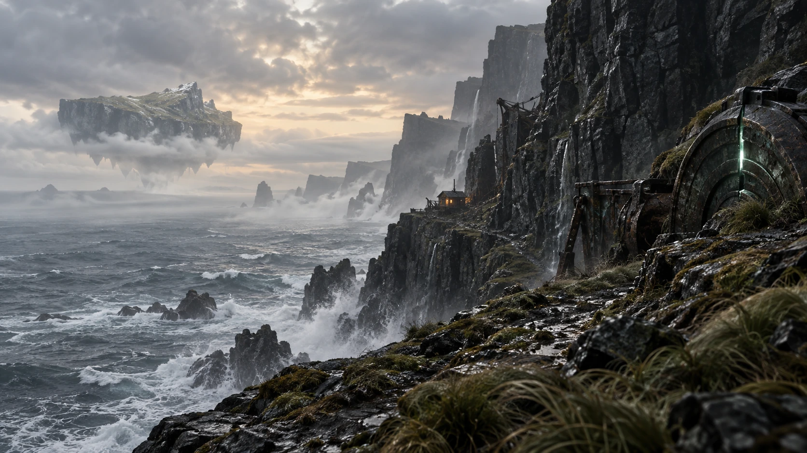
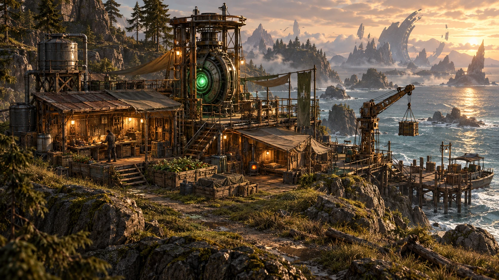

IN DEVELOPMENT BROWSER PLAYTESTCAMPAIGN CONCEPT ART

ENVIRONMENT CONCEPTSURVIVE. BUILD. VENTURE FURTHER.
An island.
A way beyond.
Make a home from what the coast gives you. Gather timber and salvage, build your shelter, and craft the means to reach the rift.
Step through and face an unexpected trial. Clear it, and the passage stays open. Your next journey begins where the last one left you.
BEGIN YOUR JOURNEYAXIOMORT / FIELD OF VIEW
The world ahead.
ARRIVALENVIRONMENT CONCEPT · NOT GAMEPLAY01 / 03
Concept art explores the visual direction. In-game images show the current browser playtest.
GAME INFORMATION
AXIOMORT
A survival adventure by BreadFlows.
- PLATFORM
- Web browser
- PLAYERS
- Single player
- STATUS
- In development
- AVAILABLE NOW
- Island playtest
PLAY AXIOMORT
Keyboard & mouse recommended.
Your progress saves on this device.